8.横断面设计
其实做完路基设计计算，横断面已经出来了，不过有些需要更加详细的设计，比如挖台阶处理之类的，就需要手动设计。
如果不需要更详细的设计，直接点击设计-横断面设计绘图，查看横断面图即可。
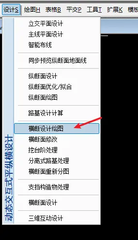
设计控制
勾选自动延伸地面线不足、扣除桥隧断面
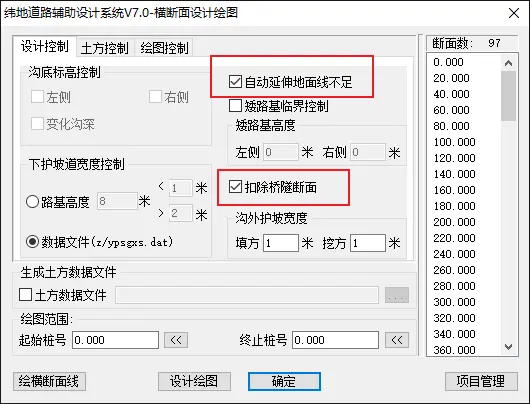
土方控制
勾选土方数据文件。点击旁边的三个点，选一个地方保存下来。
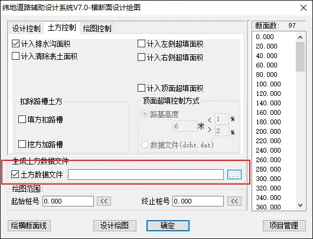
绘图控制
标准比例要选择 1:200，然后每幅列数那里一般选 1-2 列，正规是 1 列，如果图较多，可以设置 2 列。
勾选自动剪断地面线宽度，否则你会发现地面线延伸到图框外了。
另外一边的标注，一般勾选控制标高和地面线高程，其它看要求来。
标注型式，低等级公路(二级以下)选择标注数据即可，其它可以选表格标注。
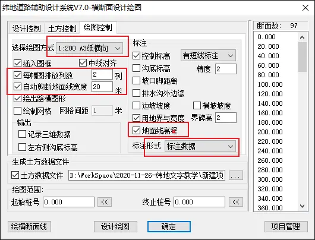
绘图范围
可以自己定义出图的范围，没有特殊要求就输出全线图。
然后点击设计绘图，看命令栏操作即可。
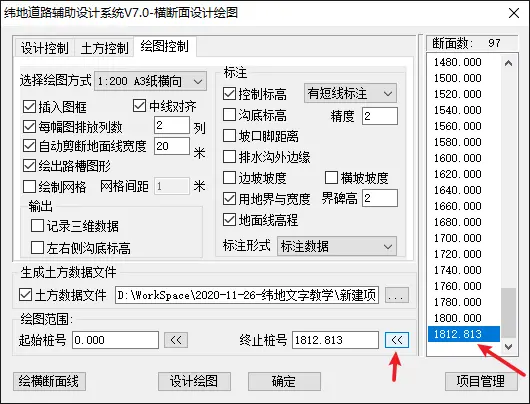
接下来这个是需要手动调整的步骤。
绘制标准横断面
这里的绘制标准横断面不是放到计算书上的标准横断面，这里绘制标准横断面是为了生成全线的横断面图。
点击设计-横断面设计：
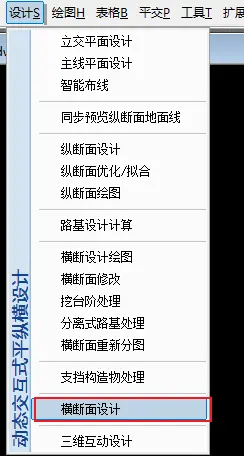
弹出横断面设计工作空间：
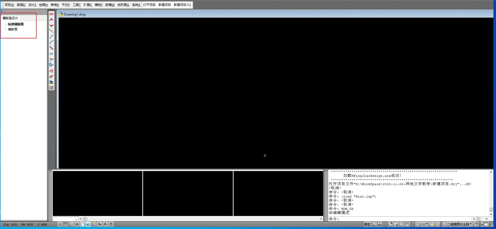
点击第一个，自动生成标准横断面：
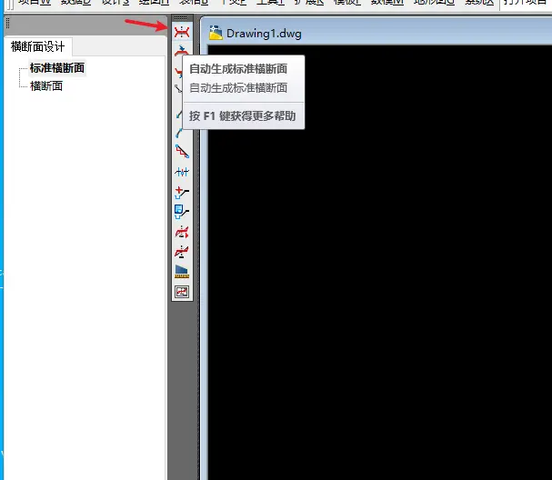
这里自动生成是根据之前设计向导填入的数据生成。
然后双击鼠标轮滚：
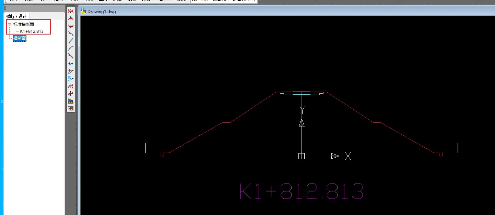
就可以看到这个标准横断面，默认是填方段的。我们可以看到旁边的标准横断面多了一个桩号，这就是说这个标准横断面是以这个桩号为基础生成的。我们我可以看看标准横断面的数据是否有误，然后可以进行修改。
如果没有什么错误，就开始横断面戴帽
如要修改，点击数据-控制参数输入-标准断面：
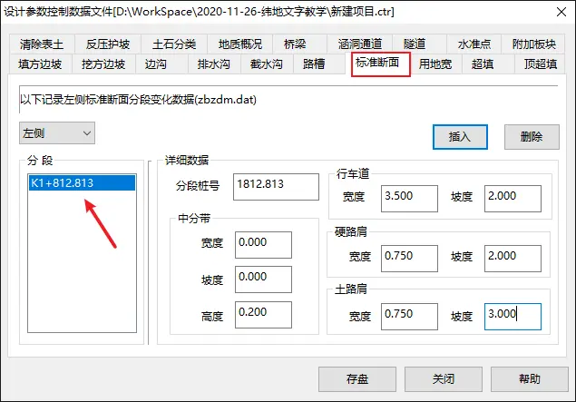
进行修改。
横断面戴帽
点击旁边的横断面戴帽：
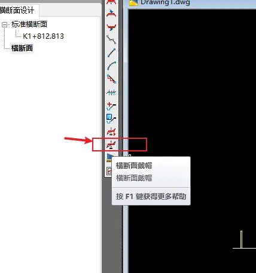
然后弹出桩号范围填写：
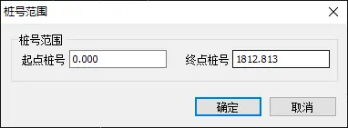
点击确定：
这时候我们就可以看到横断面生成了许多桩号：
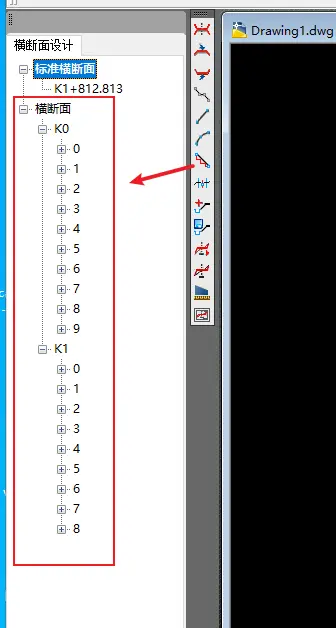
可以点击各个桩号逐一查看：
一般都没啥大问题，除非是要求对每个段进行单独的详细设计，否则由纬地自动生成的就可以直接使用了。在横断面设计这一步，能详细做的就是挖台阶处理，但那样太详细的设计，一两个月只靠一个人是完成不了的。
如果你要回复正常的工作空间，关闭横断面设计的窗口即可：
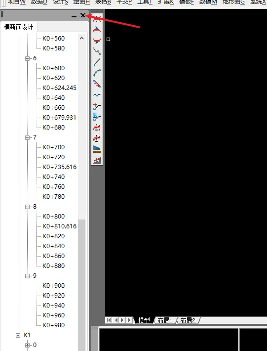